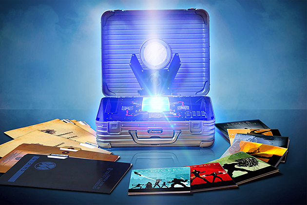

Cinema lovers, prepare to gorge yourself on hi-def greatness. Arriving with 13 new-to-Blu-ray titles, the Masterpiece Collection ($225) includes 15 films, each one digitally restored from high-definition film source, presented in 1080p with DTS-HD sound. Included are Saboteur (1942), Shadow of a Doubt (1943), Rope (1948), Rear Window (1954), The Trouble With Harry (1955), The Man Who Knew Too Much (1956), Vertigo (1958), North by Northwest (1959), Psycho (1960), The Birds (1963), Marnie (1964), Torn Curtain (1966), Topaz (1969), Frenzy (1972), and Family Plot (1976). The set also includes a 50-page collectible book and over 15 hours of bonus features, or more than enough entertainment to get you through those fall evenings when watching football sadly isn't an option.
Did you miss out on The Avengers because you needed to catch up on all the characters' backstories? Good news: Marvel Cinematic Universe: Phase One ($140) packs all the necessary films on Blu-ray in a swank package. It includes Iron Man, Iron Man 2, The Incredible Hulk, Captain America: The First Avenger, Thor, and the aforementioned The Avengers, as well as a bonus disc full of exclusive content, artwork, prop reproductions, and your very own glowing Tesseract. Arriving in September.